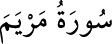

19-MERYEM SÛRESİ
Meryem sûresi, 98 âyet olup Mekke’de nâzil olmuştur. Bazı tefsirlere göre 58.
âyet, bazılarına göre de 71. âyet Medine’de nâzil olmuştur. Bu sûre, diğer bahisler
yanında, özellikle Hz. Meryem’den ve onun Hz. İsa’yı dünyaya getirmesinden
bahsetmesi sebebiyle «Meryem sûresi» adını almıştır.